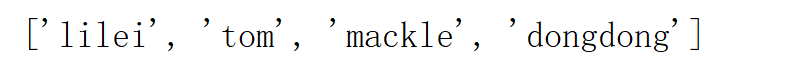
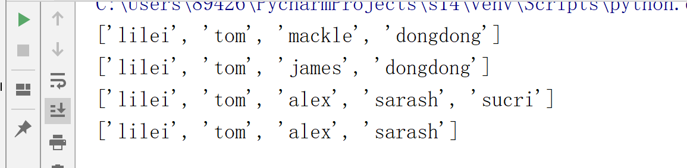
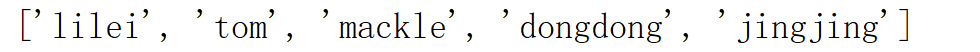
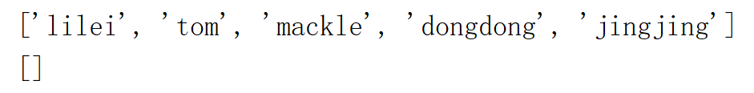
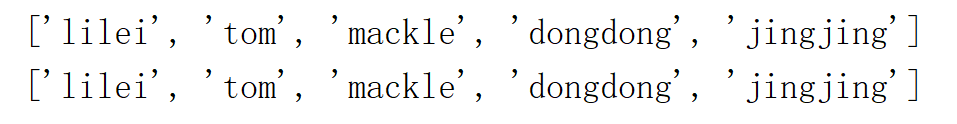
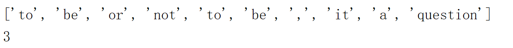
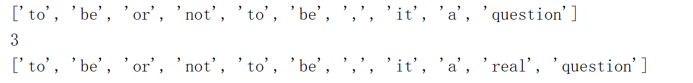
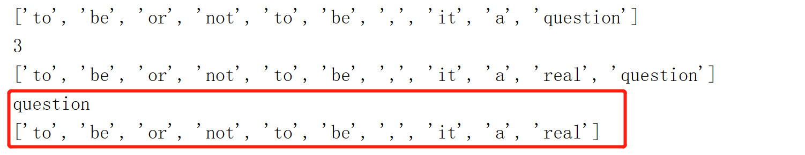
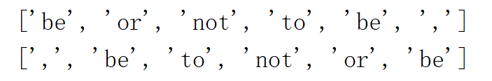

本文讲解python列表的常用操作：
1.list函数，可以将任何序列作为list的参数
names=['lilei','tom','mackle','dongdong']
print(list(names))
结果：
2.基本操作（多数方法为就地改变，不返回新列表）
（1）赋值 ‘=’；切片赋值；删除列表元素
names=['lilei','tom','mackle','dongdong']
print(list(names))
names[2]='james' # 给列表元素赋值
print(list(names))
names[2:]=['alex','sarash','sucri'] # 给列表切片赋值
print(list(names))
del names[-1] #删除列表元素
print(list(names))结果：
（2）列表方法
append用于将一个对象附加到列表末尾；注意：---append就地修改列表，不会返回新列表；
names=['lilei','tom','mackle','dongdong']
names.append('jingjing')
print(names)
results: clear 就地清空列表内容
names=['lilei','tom','mackle','dongdong']
names.append('jingjing')
print(names)
names.clear()
print(names)
结果：copy 赋值列表
names=['lilei','tom','mackle','dongdong']
names.append('jingjing')
print(names)
names2=names.copy()
print(names2)
结果：count 计算指定元素在列表中出现了多少次
names=['to','be','or','not','to','be']
print(names.count('to'))
结果：2extend 同时将多个值附加到列表末尾---就地改变，不返回新列表
shacspear=['to','be','or','not','to','be',',']
shacspear2=['it','a','question']
shacspear.extend(shacspear2)
print(shacspear)
结果：['to', 'be', 'or', 'not', 'to', 'be', ',', 'it', 'a', 'question']index 查找指定值在列表中第一次出现的索引
shacspear=['to','be','or','not','to','be',',']
shacspear2=['it','a','question']
shacspear.extend(shacspear2)
print(shacspear)
print(shacspear.index('not'))
结果：insert 将一个对象出入列表
shacspear=['to','be','or','not','to','be',',']
shacspear2=['it','a','question']
shacspear.extend(shacspear2)
print(shacspear)
print(shacspear.index('not'))
shacspear.insert(9,'real')
print(shacspear)
结果：pop 从列表删除一个元素（默认为最后一个元素），并返回这一元素
shacspear=['to','be','or','not','to','be',',']
shacspear2=['it','a','question']
shacspear.extend(shacspear2)
print(shacspear)
print(shacspear.index('not'))
shacspear.insert(9,'real')
print(shacspear)
print(shacspear.pop())
print(shacspear)
结果：remove 删除第一个为指定值的元素
shacspear=['to','be','or','not','to','be',',']
shacspear.remove('to')
print(shacspear)
结果：['be', 'or', 'not', 'to', 'be', ',']reverse 按相反顺序排列列表中的元素
shacspear=['to','be','or','not','to','be',',']
shacspear.remove('to')
print(shacspear)
shacspear.reverse()
print(shacspear)
结果：sort 对列表就地排序--直接对原列表进行修改，不返回新列表
numbers=[4,6,78,23,12,90,56]
numbers.sort() # 默认升序排列
print(numbers)
结果：[4, 6, 12, 23, 56, 78, 90]sort(key,reverse)可接受两个参数key和reverse; key可将其设置为一个可用于排序的函数，不会直接用这个函数来判断一个元素是否比另一个元素小，而是用它给每个元素创建一个键，然后根据这些键值对元素进行排序；
names=['lilei','tom','mackle','dongdong']
names.sort(key=len)
print(names)
结果：['tom', 'lilei', 'mackle', 'dongdong']
numbers=[4,6,78,23,12,90,56]
numbers.sort(reverse=True) # 默认降序排列
print(numbers)结果：[90, 78, 56, 23, 12, 6, 4]
注意：列表方法的返回值，多数情况下并不返回新列表，而是对列表进行就地改变；